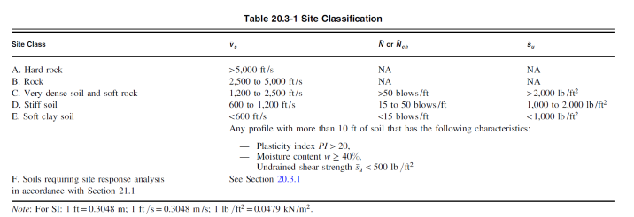

Lecture 4: Risk Categories
Risk Categories, Seismic Importance Factor, and Seismic Design Category (ASCE 7-16)
This section covers Risk Categories (*CBC, Table 1604.5*), Seismic Importance Factors (ASCE 7-16, Table 1.5-2) and Seismic Design Categories (ASCE 7-16, Tables 11.6-1 and 11.6-2). The relevance to the Seismic Exam is there will be several questions that require using a building description to determine the seismic importance factor.
You should definitely have Chapter 16 of the CBC printed out for the exam! In the meantime, please check out this digital version at https://up.codes/viewer/california/ibc-2018/chapter/16/structural-design#16. It is absolutely essential to be familiar with Section 1604.5! The cool thing about that website is that there are a ton of hyperlinks to everything, so it makes the learning process faster. :)
To start, let’s understand the significance of the Seismic Importance Factor with an example. Imagine that you’re driving over to visit a friend in the hospital. On your way through town, your car starts shaking violently unlike anything you’ve ever experienced and you realize - it’s an earthquake!!! You brake hard and wait for the shaking to stop. Once the earthquake has passed, you look around and notice that some of the buildings around you look damaged, but thankfully nothing has fully collapsed. There’s enough damage that several of the shops may have to stop business until they can make some repairs. Suddenly, you remember your friend in the hospital and wonder if he’s safe? Did the hospital survive the earthquake? Wouldn’t it suck if an earthquake shuts down an emergency service system?? Is there some system in place to prevent that??? There is, and it has to do with the Seismic Importance categorization.
Importance Factor Scales Forces With Structure Type
Structures that pose a greater threat to human life upon collapse have their seismic design forces artificially increased by the seismic importance factor. This helps to create a system by which important structures have a lower probability of collapse (not to mention the more stringent certifications through OSHPD for hospitals!). So how do we measure and define importance? The answer starts with defining the intended role of a structure, then categorizing that role as it relates to the resilience of human life.
CBC Table 1604.5 Risk Category of Buildings and other Structures
| Risk Category | Occupancy Type |
|---|---|
| Cat I | Buildings and other structures that represent a low hazard to human life in the event of failure, including but not limited to:
|
| Cat II | Buildings and other structures except those listed in Risk Categories I, III and IV. |
| Cat III | Buildings and other structures that represent a substantial hazard to human life in the event of failure, including but not limited to:
|
| Cat IV | Buildings and other structures designated as essential facilities, including but not limited to:
|
Note that the CBC also provides guidance on how to handle buildings that contain multiple occupancy types.
The takeaway for a building with multiple risk categories is that you should design the entire building for the more severe risk category. The only time you can utilize different risk categories for the same building is if the portions with different risk categories are structurally separated. It is plausible to ask a question concerning this on the seismic exam.
Several exam questions will test your ability to understand the risk associated with a certain example building. CBC Section 1604.5, Table 1604.5 gives a very detailed explanation of the different categories. You may notice that this table seems awfully similar to that of ASCE 7 Table 1.5-1. The tables don’t disagree with each other, it’s just that the CBC version is more verbose and explicit. Note that the adopted building code of jurisdictions in California is the CBC, so we would default to using that standard. It is important to remember that the CBC explicitly states to use its Risk Category table in lieu of the ASCE 7 table!
Let’s unpack the table and show how it is used for the seismic exam. You’ll typically be given a brief building description on questions, and then required to determine the seismic loading. The loading will depend on the seismic importance factor (which can scale up forces), and depends on the Risk Category. So with a building description, simply use the table to determine the Risk Category. The only things not well outlined in Table 1604.5 are the occupancy groups
Occupancy groups are only referenced in Table 1604.5, but their full definitions can be found in CBC Chapter 3. It would be smart to print out this chapter, but for now it is also located at https://up.codes/viewer/california/ibc-2018/chapter/3/occupancy-classification-and-use#308. We can summarize the groups as follows:
| Group Type | Housing Description |
|---|---|
| Institutional Group I-2 | Structures used for 24 hr medical care housing more than 5 people who are incapable of self-preservation (Hospitals, Nursing Homes, Detox Facilities, Psychiatric hospitals) |
| Institutional Group I-3 | Structures inhabited by more than 5 people who are incapable of self-preservation due to security measures or restraint. (Correctional centers, correctional hospitals, correctional nursing facilities, correctional mental health facilities, correctional treatment centers, courthouse holding facility, detention centers, jails, juvenile halls, prisons, reformatories, temporary holding facility) |
A key similarity in these groups is that they consist of more than 5 people who cannot properly protect themselves in the event of a natural disaster. The main difference is why. Occupancy Group I-2 is specifically concerning those who are mentally or physically endangered, and I-3 involves people who are being intentionally detained or restricted of free will. Just remember that if it has anything to do with incarceration (including those in a prison hospital), then that group is likely I-3.
Ok, so we know how to use CBC Table 1604.5 to determine the Risk Category. Now we just plug our Risk Category into ASCE 7 Table 1.5-2 and we’re done!
ASCE 7 Table 1.5-2 Importance Factor by Risk Category
| Risk Category from |
Seismic Importance Factor, Ie |
|---|---|
| I | 1.00 |
| II | 1.00 |
| III | 1.25 |
| IV | 1.50 |
Example
What is the risk category and seismic importance factor for a chicken coop?
Answer: We determine the risk category based on occupancy. Therefore, based on ASCE 7 Section 1.5.1, this structure will fall under Risk Category I. Refer to ASCE 7 Section 1.5.2 to determine the seismic importance factor. Do not panic! We are simply showing where you can obtain Ip for now. In later lectures, we will show you how Ip is used to increase design forces.
Seismic Design Category
Seismic Design categories (SDC) help identify the seismic risk of a building by nature of their geographic location and occupancy, regardless of their design and construction. SEI/AISC 7 identifies buildings within six different Seismic Design Categories labeled as A,B,C,D,E, and F in the fashion of increasing seismic risk.
The SDC of a building defines which types of rules will apply to that structure. It goes beyond just the design forces and controls:
- The type of lateral resisting system that can be used
- The height of the building
- The detailing requirements
- The acceptable analysis procedures, and
- The types of irregularities that can occur
This allows buildings to have different requirements depending on how much seismicity could affect them. For example, a barn in the midwest cannot be designed to the same standards as hospitals in SF. Needless to say, the requirements related to SDC are much broader and more complex.
How is SDC determined for a structure?
The Seismic Design Category for a structure can be determined using the following steps:
Step 01: Determine Site Classification and Risk Category of the structure:
The Site Soil classification is done in accordance with ASCE 7-16, Table 20.3-1 (as shown below) and Section 20.3 based on the upper 100 ft (30 m) of the site profile. Site Class D is the default classification if the soil properties are not known in sufficient detail to determine the site class.
 ASCE 7-16 Table 20.3-1The Risk Category for a building is determined according to ASCE 7-16, Table 1.5-1 (as shown below) based on the risk to human life, health, and welfare associated with their damage or failure by nature of their occupancy or use. The highest applicable Risk Category or Categories is finally assigned to the structure.
ASCE 7-16 Table 1.5-1Step 02: Determine Site Coefficients:
For a given site class and, given SS and S1 values, the Short-Period Site Coefficient, Fa, and Long-Period Site Coefficient, Fv, are defined in ASCE 7-16, Tables 11.4-1 and 11.4-2 respectively, as shown below:
ASCE 7-16 Table 11.4-1 & 11.4-2
Note: Where Site Class D is selected as the default site class per ASCE 7-16, Section 11.4.3, the value of Fa shall not be less than 1.2.
Step 03: Determine MCER and Design Spectral Response Acceleration Parameters:
The Risk - Targeted Maximum Considered Earthquake (MCER) Ground Motion Response Acceleration Parameters for short periods (SMS) and at 1-second (SM1), can be determined from ASCE 7-16, Eqs. (11.4-1) and (11.4-2) as shown below:
From SMS and SM1, the Design Spectral Acceleration Parameters at short periods, SDS, and 1-s periods, SD1, can be determined from ASCE 7-16, Eqs. (11.4-3) and (11.4-4) as given below:
Step 04: Finally determine the Seismic Design Category, SDC:
For structures with S1 ≥ 0.75:
Seismic Design Category E covers Risk Category I, II, and III structures
Seismic Design Category F covers Risk Category IV structures
For structures that do not fit into these categories, they are assigned based on their Risk Category and design spectral response acceleration parameters, SDS and SD1, in accordance with ASCE 7-16, Table 11.6-1 and Table 11.6-2 (as shown below). The most important thing to remember is that the Seismic Design Category assigned to the structure is the more severe SDC assigned from both the tables!
ASCE 7-16 Table 11.6-1 & 11.6-2
For structures with S1 < 0.75, the Seismic Design Category can be determined from Table 11.6-1 if the following four conditions are met:
1) The approximated fundamental period of the structure, Ta, has to be less than 0.8Ts
2) The story drift is to be calculated using the fundamental period of the structure, T, which must be less than Ts.
3) This condition defines Eqn. 12.8-2 used to determine the seismic response coefficient, Cs
4) This condition states that diaphragms are to be rigid, otherwise, there is a limit on the allowable horizontal distance between the vertical elements of the seismic resisting system.
Note: The first two conditions apply for the two orthogonal directions of the structure (x- and y- planes)
This concludes how to find the Seismic Design Category (SDC) for a given structure. It can be concluded that during a MCER, risk category I and II structures are designed to resist major structural failures and loss of life, but they are not designed to be functional after the earthquake has passed. They may very well be broken and uninhabitable post-earthquake. Risk Categories III and IV have larger design forces and criteria so that they are more likely to provide both immediate safety to occupants during the earthquake, and be safe enough to be occupied post-earthquake. This is important for buildings like hospitals and fire stations which should be operational during and after a disaster. Seismic Design Categories (SDC) reinforce the objective of structural design, which is to preserve building safety and human health, by imposing additional requirements to achieve these goals.
Sample Questions
Question: Which structure would you rather take shelter in during an earthquake?
Building #1: 10ft tall wood framed barn used to store hay.
Building #2: 30ft tall masonry generator room powering a hospital.
To answer, let’s frame this question in terms of our knowledge about collapse probability. We know that more important structures have a lower probability of collapse. An agricultural facility has a lower risk category than a structure that provides support for an essential facility like a hospital. The structure with the greater risk category will also have a larger seismic importance factor. So all else being equal, Building #2 should be designed for greater seismic forces and have a lower probability of collapse.
Question: A coworker who recently moved to California is using ASCE 7 Table 1.5-1 to determine a structure’s Risk Category. They ask you if it’s OK to use this table. What is your response?
An appropriate response should note that building jurisdictions in California adopt the California Building Code (CBC). The CBC has the final say on guidelines, and the CBC specifically states to use its table for determination of Risk Category in lieu of ASCE 7. Even though we use ASCE 7 in the design of buildings, this is only because the CBC explicitly states to use it. So there can be written language in the CBC that controls the use of ASCE 7.
Question: What is the seismic design category of the following structure: A county jail with a max capacity of 10 people. The upper 15 ft of soil has an undrained shear strength of 1900psf. S1 = 0.35g, SS = 1.0g
Procedure: We need SDS, SD1, and the risk category to determine the seismic design category. This is effectively three small tasks put together
Step One: Determine SDS and SD1. Start by determining the site class. Check ASCE 7 Table 20.3-1. We use information from the problem statement to try and select the appropriate site class. However the question statement only gave information about the upper 15ft, and the table requires input from the average 100ft of depth (per section 20.4 definitions). When it seems like we don’t have enough information to solve a problem, we should check out footnotes or read the start of the sections to see if there are any exceptions that can be met.
ASCE 7 section 20.1 states that we can default to Site Class D with some requirements. Based on the limited information in the question statement, it’s fine to just go with the default of site class D. We can even check the shear strength value from the question and see if it matches site class D (in this case it does).
With our site class determined, we can determine the acceleration parameters. Check out ASCE 7 section Tables 11.4-1 and 11.4-2. Plugging in Site Class D with the given S1, SS values, we get Fa = 1.1, Fv = 1.95. Note that Fv was interpolated between the two listed S1 values. Use eqn 11.4-1 and 11.4-2, to determine MCE level accelerations.
SMS = FaSS = 1.1 x 1.0 = 1.1
SM1 = FvS1 = 1.95 x 0.35 = 0.683
Using ASCE 7 eqn 11.4-3 and 11.4-4, we determine SDS and SD1
SDS = (⅔)(SMS) = (⅔) x 1.1 = 0.73g
SD1 = (⅔)(SM1) = (⅔) x 0.683 = 0.455g
Step 2: Determine Risk Category. Check CBC table 1604.5 for the risk category. It is not clear based on the table description what category a jail applies to, so we can check CBC chapter 3, section 308 to see some definitions for occupancy categories. CBC Section 308.4 notes that buildings where any portion is used as a jail with a restricted occupancy of at least 5 people shall be classified as Institutional Group I-3. Referencing back to table 1604.5, group I-3 falls under Risk Category III.
Step 3: The last step is to use ASCE 7 Table 11.6-1 and 11.6-2 to determine Seismic Design Category. First, check if we can even use the tables. If S1 is at least 0.75, then the SDC is automatically E or F. In this question S1=0.35 so we can use the table values.
For Risk Category III and SDS = 0.73, SDC = D (Table 11.6-1). For SD1 = 0.455, SDC= D (table 11.6-2). In this case both tables lead to SDC = D, so we will take that value as our seismic design category. If they resulted in different categories, we would take the worst case.
Answer: Seismic Design Category D. Note that there are also exceptions to having to use both of the tables at the end, we can just use the SDS table if there is no other information provided by the question